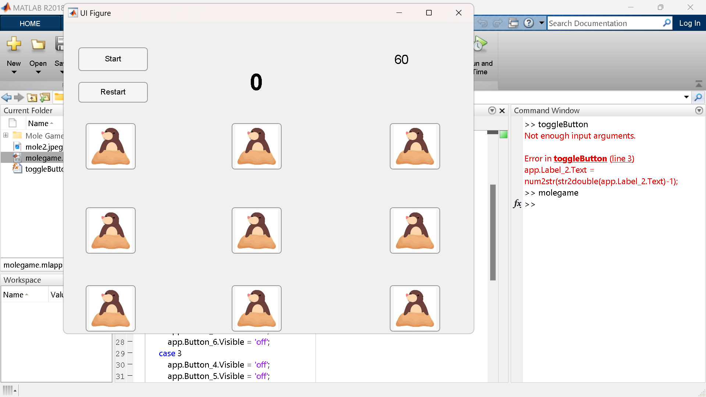
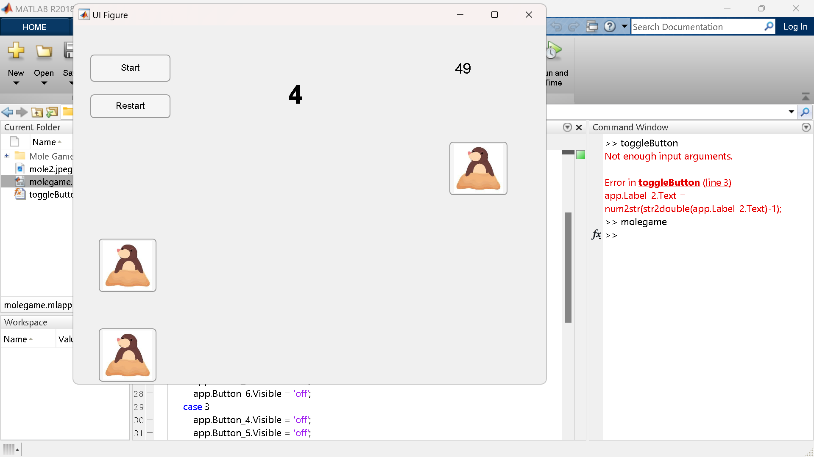

MATLAB / INTERACTIVE PROGRAMMING
Mole Game — MATLAB Application
An interactive Whac-A-Mole-style MATLAB project combining graphical interaction, random target generation, scoring, event handling and time-based game logic.
PLATFORM
MATLAB
PROJECT TYPE
Interactive Application
CONTROL
Event-Driven
CORE FEATURE
Random Target Generation
01 / OVERVIEW
Project Overview
The Mole Game was developed as an interactive Whac-A-Mole-style application using MATLAB graphics and programming logic.
The project combines visual elements with randomized gameplay, score tracking, timing control and user interaction.
02 / PROJECT MEDIA
Application Screenshots
Screenshots from the MATLAB Mole Game application.


03 / FEATURES
Main Features
Random Target Appearance
Target locations are varied during gameplay to make interaction unpredictable.
Scoring System
Player interaction is tracked and converted into a running game score.
Time Control
Timing logic controls the active gameplay duration and target behavior.
Event Handling
MATLAB event-handling logic responds to player interaction during gameplay.
Visualization
MATLAB graphical features provide the visual interface for the game.
Logical Flow
Game state, score, random behavior and timing are coordinated through program logic.
04 / GAME FLOW
General Working Sequence
The game initializes its graphical interface and scoring state.
A target appears at a randomized location.
The player interacts with the displayed target.
The program handles the interaction and updates the score.
The target position changes according to the randomized game logic.
Timing logic controls the continuation and termination of the gameplay session.
05 / PROGRAMMING CONCEPTS
Concepts Applied
- MATLAB Programming
- Graphical Visualization
- Random-Number-Based Behavior
- Event-Driven Interaction
- Score Management
- Time-Based Control
- Logical Program Flow
06 / OUTCOME
Project Outcome
- Developed a functional interactive MATLAB game.
- Implemented randomized target behavior.
- Integrated scoring and timing mechanisms.
- Applied event handling to user interaction.
- Combined MATLAB visualization with application logic.